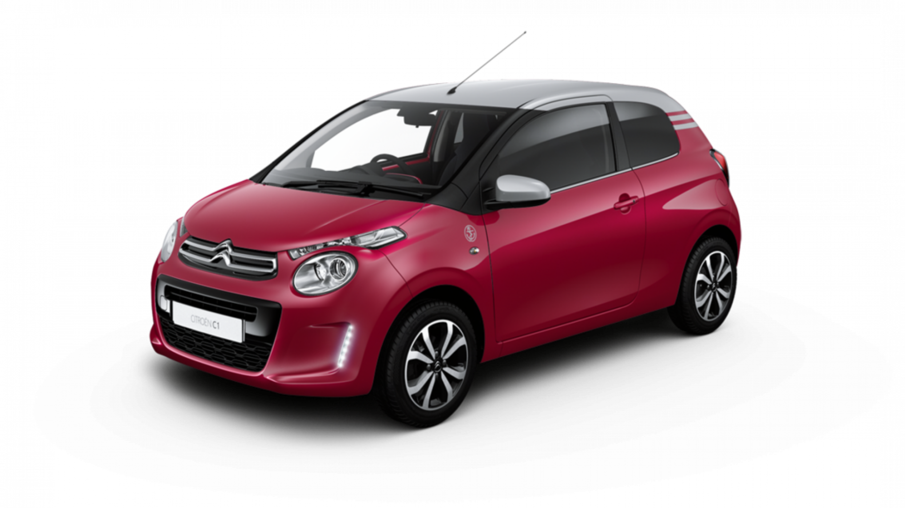

Citroen C1
Longueur
3,46 m
Largeur sans rétros
1,61 m
Hauteur
1,46 m
Empattement
2,34 m
CitroenVolume de coffre mini/maxi
196 l / 780 l
Nombre de portes
5
Nombre de places assises
4
Poids à vide
855 kg
Caractéristiques moteur
Motorisation
Essence
Puissance fiscale
4 CV
Moteur
3 cylindres en ligne, 12 soupapes
Cylindrée
998 cm3
Puissance
72 ch à 6 000 trs/min
Couple
93 Nm à 4 400 trs/min
Type de suralimentation
Pas de suralimentation
Boîte de vitesse, Nb de rapports
Mécanique à 5 rapports
Roues motrices
AV

Citroen C2
Longueur
3,66 m
Largeur sans rétros
1,89 m
Hauteur
1,46 m
Empattement
2,31 m
Volume de coffre mini/maxi
166 l / 879 l
Nombre de portes
3
Nombre de places assises
4
Poids à vide
956 kg
Caractéristiques moteur
Motorisation
Essence
Puissance fiscale
4 CV
Moteur
4 cylindres en ligne, 8 soupapes
Cylindrée
1 124 cm3
Puissance
60 ch à 5 500 trs/min
Couple
94 Nm à 3 300 trs/min
Type de suralimentation
Pas de suralimentation
Boîte de vitesse, Nb de rapports
Mécanique à 5 rapports
Roues motrices
AV